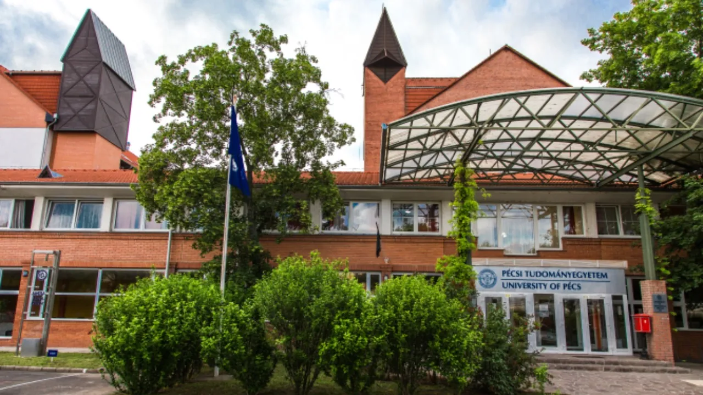
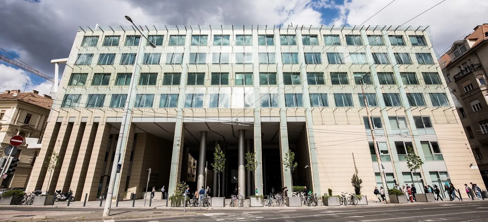
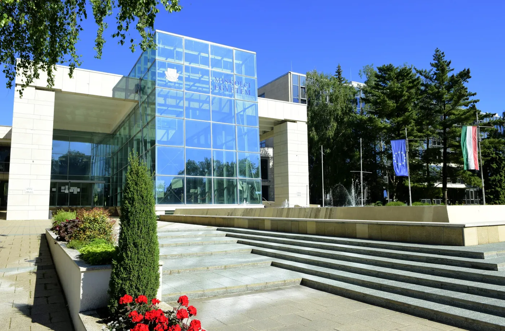

Macaristan'daki programları filtreleyin
Seviye, alan, şehir, üniversite ve eğitim diline göre daraltın. Seçtiğiniz filtreler adres çubuğuna yazılır; bağlantıyı ailenizle veya danışmanınızla paylaşabilirsiniz.
Ücretler yıllık öğrenim ücretidir ve programa göre değişir. Katalog, danışmanlık ekibimiz tarafından dönemsel olarak güncellenir (son güncelleme: Ağustos 2026). Üniversiteler bu koşulları değiştirebilir; nihai bilgi için ilgili üniversitenin resmî sayfasını esas alınız.







Seçili:
Bu filtrelerle eşleşen program yok
Bu, aradığınız programın Macaristan'da bulunmadığı anlamına gelmez; kataloğumuz doğrulanmış kayıtlarla sınırlıdır. Filtreleri gevşetin ya da doğrudan bize sorun.